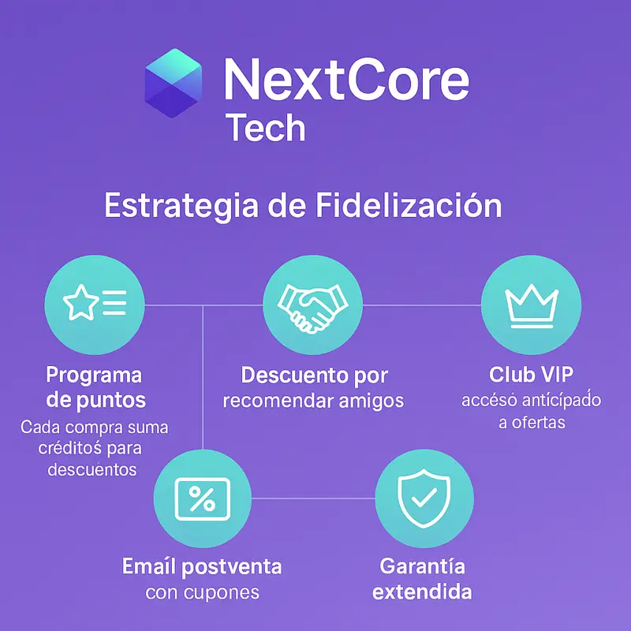

Parte 4 · Estrategias de Fidelización
La fidelización es una parte clave del marketing digital moderno: no solo busca mantener a los clientes activos, sino convertirlos en embajadores de la marca. En NextCore Tech, se diseñó un plan integral para fortalecer la relación postcompra, aumentar la recompra y premiar la lealtad de los usuarios.
Estrategias implementadas
| Acción | Descripción | Objetivo |
|---|---|---|
| Programa de puntos | Cada compra suma créditos que pueden canjearse por descuentos en futuras compras. | Incentivar la recompra y aumentar el ticket promedio. |
| Descuento por recomendación | Los clientes obtienen beneficios al referir amigos que realicen su primera compra. | Ampliar la base de clientes de forma orgánica. |
| Club NextCore Tech VIP | Membresía con acceso anticipado a ofertas, lanzamientos y beneficios exclusivos. | Reforzar el sentido de pertenencia a la comunidad. |
| Email postventa | Envío de correos agradeciendo la compra, solicitando reseñas y ofreciendo cupones. | Mantener el contacto y mejorar la reputación online. |
| Garantía extendida y atención rápida | Chat activo con respuesta inmediata y servicio postventa priorizado. | Aumentar la confianza y satisfacción del cliente. |
Enfoque estratégico
Estas acciones fueron pensadas para crear un ecosistema de retención, donde cada interacción después de la compra refuerza el vínculo con la marca. El objetivo no es solo vender, sino construir relaciones duraderas basadas en la confianza, la atención personalizada y la percepción de valor constante.
El uso combinado de Mailchimp, Shopify y Meta Ads permite automatizar las comunicaciones y ofrecer beneficios en los momentos más relevantes del ciclo de vida del cliente.

Resultados esperados
- Incremento en la tasa de recompra y valor promedio por cliente.
- Mayor engagement gracias al club VIP y las promociones exclusivas.
- Aumento en las reseñas positivas y la reputación digital.
Conclusión: Las estrategias de fidelización de NextCore Tech demuestran una gestión de marketing centrada en el cliente, donde la postventa se convierte en una oportunidad para fortalecer la relación, generar confianza y consolidar la lealtad hacia la marca.